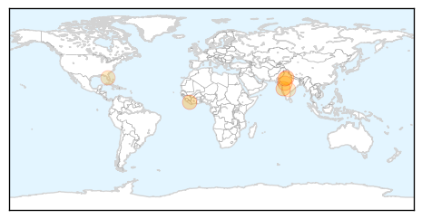
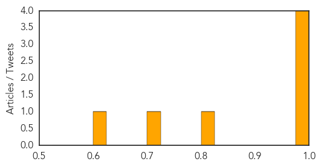

Swine Flu
30-Day Web Trend
4 alerts, 6 warnings

30-Day Twitter Trend
0 alerts, 0 warnings
Article Locations
Article Confidences
Top Articles:
- 0.999
- CMO asks residents not to worry and to treat virus normally
- 0.999
- 7 Die in Rajasthan, 19 Test Positive; Many States Affected
- 0.998
- Seven Die of Swine Flu in Rajasthan, 19 Test Positive
- 0.981
- Rajasthan witnesses 2 deaths due to Swine Flu, total count 7 this year!
- 0.809
- Swine Flu Claims 2 Lives in Indore
- 0.712
- CDC, Google partner to predict flu patterns
- 0.620
- Swine flu claims 2 more lives in Hyderabad
Top Tweets:
-
No tweets found for Jan 14, 2015
Meningitis
30-Day Web Trend
7 alerts, 3 warnings

30-Day Twitter Trend
0 alerts, 0 warnings

Article Locations
Article Confidences

Top Articles:
Top Tweets:
-
No tweets found for Jan 14, 2015